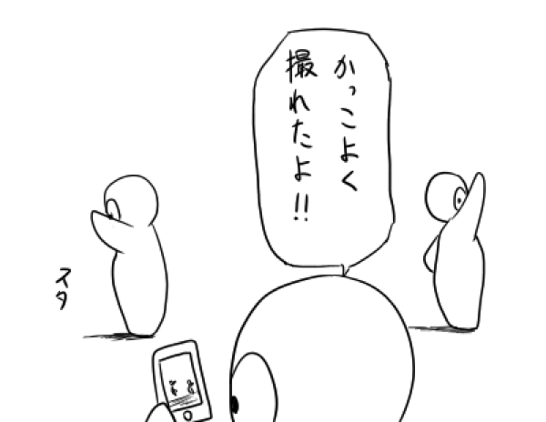

躍動感のある人体が描かれているといえばやっぱりアクション漫画ですかね。キャラクターのアクションを表現するとき、止め絵として描く瞬間の選び方によって色々な見え方をします。重要なのはインパクトの瞬間がどこにあるか、そして描かれている絵の瞬間はインパクトから相対的にどのあたりなのか。
例えば、パンチを描くときにインパクトの瞬間を描くのか、インパクト前のタメを描くのか、インパクト後のフォロースルーを描くのか、それによって見る人が期待するものが変わってきます。では著名な先生達の絵を分析して、躍動感の源泉を掘り当てるヒントを探してみましょう。
まずは『ドラゴンボール』第16巻の有名なシーン。これはインパクトの瞬間です。この瞬間をしっかりと見せるとインパクトの重量感がビリビリと伝わってきます。アニメ版ピッコロの「ヴォグァッ...」という声が聞こえてきそうな、本来はインパクトは一瞬で終わるところなのにそういう時間の膨張が感じられます。見る人はパンチを食らったピッコロのリアクションに期待します。ジャンプコミックに多そうな表現ですね。

次は『ZETMAN』第02巻より、これはインパクト後ですが、効果線によってインパクトの瞬間の衝撃と、その前後の超速の動きを感じさせます。3つの瞬間を1コマで描く事で時間を圧縮しています。効果線というのは基本的には残像の事なので、描けば描くほど1コマの中に時間は圧縮されます。

3つ目は『無限の住人』第20巻より、すばしっこい剣士が駆け抜ける様に敵に斬撃を与えて着地したところです。つまりインパクト後のフォロースルーです。動きの途中なので腕の寸法が残像によって歪んで描かれていて、さらに効果線の方向が腕の方向と直行しています。物体が最も安定するのは加重と重心が一致するときなので、この絵では全くの不一致であるのと同時に、回転半径の最も遠い腕の先の部分に効果線による運動エネルギーが描かれているのでユラユラと見えるわけです。フォロースルーの動きはインパクトの瞬間の名残で、見た人の心理がそのアクションを美化して余韻に浸ります。

最後は『バガボンド』第34巻の、恐るべき線の密度で描かれた芸術的な居合い斬りの瞬間です。これは敵がいたらインパクトの瞬間に見えるのかも知れませんが、水の表現によって時間が遅延されて、インパクト後の長い運動停止状態が描かれています。この水は剣を振り抜いた後に付いて来た流体なので粘性を感じ、その粘っこさが時間の感覚を惑わしています。動きのある画面に対してキャラクターは静止していて、アクションシーンのようで実は心理描写であることが伺えます。

こう考えてみると、躍動感は静止画に込める時間の切り取り方で生まれると言うことが出来ます。前回のアタリ線を描かないデッサンの記事で、描かれているキャラクターの前後の動きを感じると躍動感がある、ということを言っていましたが、今回で具体的な理由が分かりました。見た人が1枚の静止画から好きなように映像をイメージできたときに、その絵は頭の中で躍動するということなのでしょう。